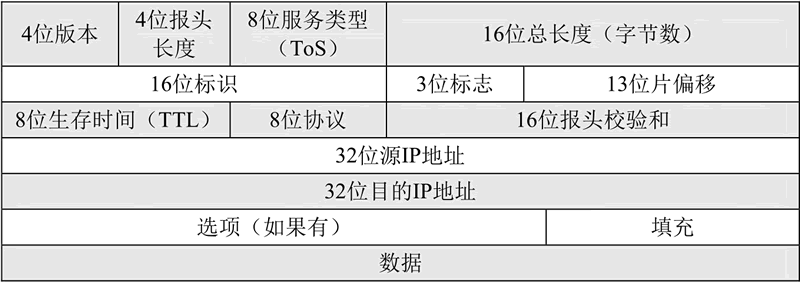
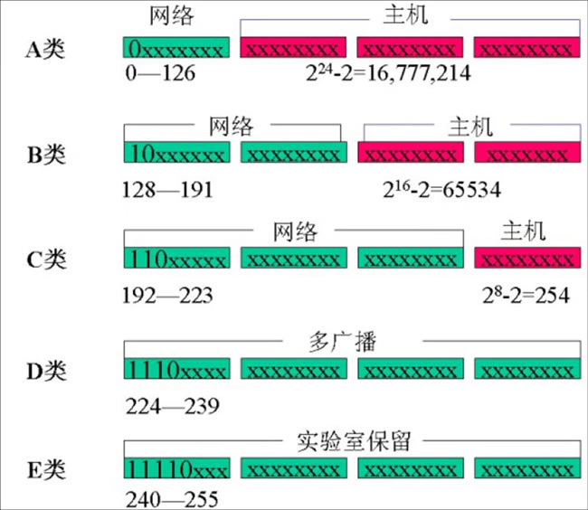

首页 > 编程笔记
IP协议是什么（超级详细）
IP 协议是 TCP/IP 协议族中最为核心的协议，更确切的说是网络层重要的协议之一。
IP 协议把上层数据报封装成 IP 数据报后进行传输，如果 IP 数据报太大，还要对数据报进行分片后再传输，到了目的地址处再进行组装还原，以适应不同物理网络对一次所能传输数据大小的要求。
IP协议具有以下几个显著的特点：
IP 报头中各个部分的含义分别是：
注意这个“标识符”并不是序号，IP 是无连接服务，数据报不存在按序接收的问题。当 IP 数据报由于长度超过网络的 MTU（Maximum Transmission Unit，最大传输单元）而必须分片（把一个大的网络数据报拆分成一个个小的数据报）时，这个标识字段的值就被复制到所有的小分片的标识字段中。相同的标识字段的值使得分片后的各数据报片最后能正确地重装成为原来的大数据报。该字段占用 16 bit。
在 Linux 源码中，IP 报头的定义如下：
要理解 IP 分片，首先要理解 MTU，物理网络一次传送的数据是有最大长度的，因此网络层的下层（数据链路层）的传输单元（数据帧）也有一个最大长度，这个最大长度值就是 MTU，每一种物理网络都会规定链路层数据帧的最大长度，比如以太网的 MTU 为 1500 字节。
IP 协议在传输数据报时，若IP数据报加上数据帧头部后长度大于 MTU，则将数据报切分成若干分片后再进行传输，并在目标系统中进行重组。IP 分片既可能在源端主机进行，也可能发生在中间的路由器处，因为不同网络的 MTU 是不一样的，而传输的整个过程可能会经过不同的物理网络。如果传输路径上的某个网络的 MTU 比源端网络的 MTU 要小，路由器就可能对 IP 数据报再次进行分片。分片数据的重组只会发生在目的端的 IP 层。
IP 地址现在有两个版本，分别是 32 位的 IPv4 和 128 位的 IPv6，后者是为了解决前者不够用的问题而产生的。每个 IP 数据报都必须携带目的 IP 地址和源 IP 地址，路由器依靠此信息为数据报选择路由。
这里以 IPv4 为例，IP地址由四个数字组成，数字之间用小圆点隔开，每个数字的取值范围在 0~255 之间（包括 0 和 255）。通常有两种表示形式：
两种方式可以相互转换，每 8 位二进制数对应一位十进制数，如下图所示。
IP 地址在设计的时候就考虑到地址分配的层次特点，把每个 IP 地址分割成网络号（NetID）和主机号（HostID）两个部分，网络号表示主机属于互联网中的哪一个网络，而主机号则表示其属于该网络中的哪一台主机，两者之间是主从关系。同一网络中绝对不能有主机号完全相同的两台计算机，否则会报出IP地址冲突。
IP 地址分为两部分后，IP 数据报从网际上的一个网络到达另一个网络时，选择路径时可以基于网络而不是主机。在大型的网际中，这一优势特别明显，因为路由表中只存储网络信息而不是主机信息，这样可以大大简化路由表，方便路由器的 IP 寻址。
根据网络地址和主机地址在IP地址中所占的位数可将IP地址分为 A、B、C、D、E 五类，每一类网络可以从IP地址的第一个数字看出，如图 2 所示。
5 类 IP 地址中，A 类地址第一位为 0，第二至八位为网络地址，第九至三十二位为主机地址，这类地址适用于为数不多的主机数大于65536（216）的大型网络，A类网络地址的数量最多不超过 126（27-2）个，每个 A 类网络最多可以容纳 16777214（224-2）台主机。
B 类地址前两位分别为 1 和 0，第三至第十六位为网络地址，第十七至三十二位为主机地址，此类地址用于主机数介于 256～65536（28～216）之间的中型网络，B类网络数量最多 16382（214-2）个。
C 类地址前三位分别为 1、1、0，四到二十四位为网络地址，其余为主机地址，用于每个网络只能容纳 254（28-2）台主机的大量小型网，C 类网络数量上限为 2097150（221-2）个。
D 类地址前四位为 1、1、1、0，其余为多目地址。
E 类地址前五位为 1、1、1、1、0，其余位数留待后用。
A 类 IP 的第一个字节范围是 0 到 126，B 类 IP 的第一个字节范围是 128 到 191，C 类 IP 的第一个字节范围是 192 到 223，例如 192.X.X.X 肯定是 C 类 IP 地址，根据 IP 地址的第一个字节的范围就能够推导出该 IP 属于 A 类、B 类或 C 类。
IP 地址以 A、B、C 三类为主，又以 B、C 两类地址更为常见。除此之外还有一些特殊用途的 IP 地址：
由此可见，网络位全 1 或全 0 和主机位全 1 或全 0 都是不能随意分配的。这也就是前面的 A、B、C 类网络的网络数及主机数要减 2 的原因。
总之，主机号全为 0 或全为 1 时分别作为本网络地址和广播地址使用，这种 IP 地址不能分配给用户使用。D 类网络用于广播，它可以将信息同时传送到网上的所有设备，而不是点对点的信息传送，这种网络可以用来召开电视电话会议。E 类网络常用于试验。网络管理员在配置网络时不应该采用 D 类和 E 类网络。特殊的 IP 地址如下表所示。
当前，A 类地址已经全部分配完，B 类也不多了，为了有效并连续地利用剩下的 C 类地址，互联网采用 CIDR（Classless Inter Domain Routing，无类别域间路由）方式把许多 C 类地址合起来作 B 类地址分配，全球被分为四个地区，每个地区分配一段连续的 C 类地址：欧洲（194.0.0.0～195.255.255.255）、北美（198.0.0.0～199.255.255.255）、中南美（200.0.0.0～201.255.255.255）、亚太地区（202.0.0.0～203.255.255.255）、保留备用（204.0.0.0～223.255.255.255）。这样每一地区都有约 3200 万个网址供使用。
要计算出 IP 地址中的网络地址，需要借助于网络掩码，或称默认掩码。它是一个 32 位的数，前面 n 位全部为 1，后边 32～n 位连续为 0。A、B、C 三类地址的网络掩码分别为 255.0.0.0、255.255.0.0 和 255.255.255.0。我们通过 IP 地址和网络掩码进行与运算，得到的结果就是该 IP 地址的网络地址。网络地址相同的两台主机，就是处于同一个网络中，它们可以直接通信，而不必借助于路由器了。
举个例子，现在有两台主机 A 和 B，A 的 IP 地址为 192.168.0.1，网络掩码为 255.255.255.0；B 的 IP 地址为 192.168.0.254，网络掩码为 255.255.255.0。我们先对 A 运行，把它的 IP 地址和子网掩码每位相与：
由于 IP 地址越来越不够用，为了不浪费，人们对每类网络进一步划分出子网，为此 IP 地址的编址又有了三级编址的方法，即子网内的某个主机 IP 地址={<网络号>,<子网号>,<主机号>}，该方法中有了子网掩码的概念。后来又提出了超网、无分类编址和 IPv6。限于篇幅，这里不再赘述。
IP 协议把上层数据报封装成 IP 数据报后进行传输，如果 IP 数据报太大，还要对数据报进行分片后再传输，到了目的地址处再进行组装还原，以适应不同物理网络对一次所能传输数据大小的要求。
IP协议具有以下几个显著的特点：
- 不能保证 IP 数据报能成功地到达目的地。IP 协议仅提供最好的传输服务，如果发生某种错误时，如某个路由器暂时用完了缓冲区，IP 有一个简单的错误处理算法：丢弃该数据报，然后发送 ICMP 消息报给信源端。任何要求的可靠性必须由上层协议来提供（如TCP协议）。
- IP 协议并不维护任何关于后续数据报的状态信息，每个数据报的处理是相互独立的。这也说明，IP数据报可以不按发送顺序接收。例如，如果一信源向相同的信宿发送两个连续的数据报（先是 A，然后是 B），每个数据报都是独立地进行路由选择，可能选择不同的路线，因此 B 可能在 A 之前先到达。
- 通信双方不同步传输数据的状态信息，无法处理乱序和重复的 IP 数据报；IP 数据报提供了标识字段用来唯一标识 IP 数据报，用来处理 IP 分片和重组，不指示接收顺序。
IPv4 数据报的报头格式
IPv4 数据报的报头格式如下图所示：

图中，“数据”以上部分就是 IP 报头的内容。因为有了选项部分，所以 IP 报头长度是不定的。如果选项部分没有，则 IP 报头的长度为（4+4+8+16+16+3+13+8+8+16+32+32）bit=160bit=20 字节，这也是 IP 报头的最小长度。此图主要说明的是 IPv4 的报头结构，IPv6 的报头结构与之不同。
IP 报头中各个部分的含义分别是：
版本（Version）
占用 4 bit，标识目前采用的IP协议的版本号，一般取值为 0100（IPv4）和 0110（IPv6）。首部长度（Header Length）
即 IP 报头长度，这个字段的作用是为了描述 IP 报头的长度。该字段占用 4 bit，由于在 IP 报头中有变长的可选部分，为了能多表示一些长度，因此采用 4 字节（32 bit）为本字段数值的单位，比如，4 bit 最大能表示为 1111，即 15，单位是 4 字节，因此最多能表示的长度为 15×4=60 字节。服务类型（Type of Service，TOS）
占用 8 bit，可用 PPP、D、T、R、C、0 这 8 个字符来表示，其中，PPP定义了数据报的优先级，取值越大表示数据越重要，取值如下表所示。| ppp 取值 | 含 义 |
|---|---|
| 000 | 普通（Routine） |
| 001 | 优先（Priority） |
| 010 | 立即（Immediate） |
| 011 | 闪速（Flash） |
| 100 | 疾速（Flash Override） |
| 101 | 关键（Critic） |
| 110 | 网间控制（Internetwork Control） |
| 111 | 网络控制（Network Control） |
- D：时延，0 表示普通，1表示延迟尽量小；
- T：吞吐量，0 表示普通，1表示流量尽量大；
- R：可靠性，0 表示普通，1表示可靠性尽量大；
- C：传输成本，0 表示普通，1表示成本尽量小；
- 0：这是最后一位，被保留，恒定为 0；
总长度
占用 16 bit，该字段表示以字节为单位的 IP 数据报的总长度（包括 IP 报头部分和 IP 数据部分）。如果该字段全为 1，就是最大长度了，即 216-1= 65535字节≈63.9990234375KB，有些教程上写最大是 64KB，其实是达不到的，最大长度只能是 65535 字节，而不是 65536 字节。标识
在协议栈中保持着一个计数器，每产生一个数据报，计数器就加 1，并将此值赋给标识字段。注意这个“标识符”并不是序号，IP 是无连接服务，数据报不存在按序接收的问题。当 IP 数据报由于长度超过网络的 MTU（Maximum Transmission Unit，最大传输单元）而必须分片（把一个大的网络数据报拆分成一个个小的数据报）时，这个标识字段的值就被复制到所有的小分片的标识字段中。相同的标识字段的值使得分片后的各数据报片最后能正确地重装成为原来的大数据报。该字段占用 16 bit。
标志（Flags）
该字段占用 3 bit，该字段最高位不使用，第二位称 DF（Don't Fragment）位，DF 位设为 1 时表明路由器不对该上层数据报分片。如果一个上层数据报无法在不分段的情况下进行转发，则路由器会丢弃该上层数据报并返回一个错误信息。最低位称 MF（More Fragments）位，为 1 时说明这个 IP 数据报是分片的，并且后续还有数据报；为 0 时说明这个 IP 数据报是分片的，但已经是最后一个分片了。片偏移
该字段的含义是某个分片在原 IP 数据报中的相对位置。第一个分片的偏移量为 0。片偏移以 8 个字节为偏移单位。这样，每个分片的长度一定是 8 字节（64 位）的整数倍。该字段占 13 bit。生存时间（TTL，Time to Live，也称存活时间）
表示数据报到达目标地址之前的路由跳数。TTL 是由发送端主机设置的一个计数器，每经过一个路由节点就减 1，减到为 0 时，路由就丢弃该数据报，向源端发送 ICMP 差错报文。这个字段的主要作用是防止数据报不断在 IP 互联网络上循环转发。该字段占 8 bit。协议
该字段用来标识数据部分所使用的协议，比如取值1表示 ICMP、取值 2 表示 IGMP、取值 6 表示 TCP、取值 17 表示 UDP、取值 88 表示 IGRP、取值 89 表示 OSPF。该字段占 8 bit。首部校验和（Header Checksum）
该字段用于对 IP 头部的正确性检测，但不包含数据部分。由于每个路由器会改变 TTL 的值，所以路由器会为每个通过的数据报重新计算首部校验和。该字段占 16 bit。起源和目标地址
用于标识这个 IP 数据报的起源和目标 IP 地址。值得注意的是，除非使用 NAT（网络地址转换），否则整个传输的过程中，这两个地址不会改变。这两个地段都占用 32 bit。选项（可选）
这是一个可变长的字段。该字段属于可选项，主要是给一些特殊的情况使用，最大长度是 40 字节。填充（Padding）
由于 IP 报头长度这个字段的单位为 32 bit，所以 IP 报头的长度必须为 32bit 的整数倍。因此，在可选项后面，IP 协议会填充若干个 0，以达到 32bit 的整数倍。在 Linux 源码中，IP 报头的定义如下：
struct iphdr {
#if defined(__LITTLE_ENDIAN_BITFIELD)
__u8 ihl:4,
version:4;
#elif defined (__BIG_ENDIAN_BITFIELD)
__u8 version:4,
ihl:4;
#else
#error "Please fix <asm/byteorder.h>"
#endif
__u8 tos;
__be16 tot_len;
__be16 id;
__be16 frag_off;
__u8 ttl;
__u8 protocol;
__sum16 check;
__be32 saddr;
__be32 daddr;
/*The options start here. */
};
这个定义可以在源码目录的 include/uapi/linux/ip.h 查到。
IP数据报分片
IP 协议在传输数据报时，将数据报分为若干分片（小数据报）后进行传输，并在目的系统中进行重组，这一过程称为分片（Fragmentation）。要理解 IP 分片，首先要理解 MTU，物理网络一次传送的数据是有最大长度的，因此网络层的下层（数据链路层）的传输单元（数据帧）也有一个最大长度，这个最大长度值就是 MTU，每一种物理网络都会规定链路层数据帧的最大长度，比如以太网的 MTU 为 1500 字节。
IP 协议在传输数据报时，若IP数据报加上数据帧头部后长度大于 MTU，则将数据报切分成若干分片后再进行传输，并在目标系统中进行重组。IP 分片既可能在源端主机进行，也可能发生在中间的路由器处，因为不同网络的 MTU 是不一样的，而传输的整个过程可能会经过不同的物理网络。如果传输路径上的某个网络的 MTU 比源端网络的 MTU 要小，路由器就可能对 IP 数据报再次进行分片。分片数据的重组只会发生在目的端的 IP 层。
IP地址的定义
IP 协议中有个概念叫 IP 地址。所谓 IP 地址，就是 Internet 中主机的标识，Internet 中的主机要与别的主机通信必须具有一个 IP 地址。就像房子要有个门牌号，这样邮递员才能根据信封上的地址送到目的地。IP 地址现在有两个版本，分别是 32 位的 IPv4 和 128 位的 IPv6，后者是为了解决前者不够用的问题而产生的。每个 IP 数据报都必须携带目的 IP 地址和源 IP 地址，路由器依靠此信息为数据报选择路由。
这里以 IPv4 为例，IP地址由四个数字组成，数字之间用小圆点隔开，每个数字的取值范围在 0~255 之间（包括 0 和 255）。通常有两种表示形式：
- 十进制表示，比如 192.168.0.1。
- 二进制表示，比如 11000000.10101000.00000000.00000001。
两种方式可以相互转换，每 8 位二进制数对应一位十进制数，如下图所示。

图 2
图 2
实际应用中多用十进制表示，比如 172.16.100.2。
IP地址的两级分类编址
互联网有很多网络构成，每个网络上都有很多主机，这样便构成了一个有层次的结构。IP 地址在设计的时候就考虑到地址分配的层次特点，把每个 IP 地址分割成网络号（NetID）和主机号（HostID）两个部分，网络号表示主机属于互联网中的哪一个网络，而主机号则表示其属于该网络中的哪一台主机，两者之间是主从关系。同一网络中绝对不能有主机号完全相同的两台计算机，否则会报出IP地址冲突。
IP 地址分为两部分后，IP 数据报从网际上的一个网络到达另一个网络时，选择路径时可以基于网络而不是主机。在大型的网际中，这一优势特别明显，因为路由表中只存储网络信息而不是主机信息，这样可以大大简化路由表，方便路由器的 IP 寻址。
根据网络地址和主机地址在IP地址中所占的位数可将IP地址分为 A、B、C、D、E 五类，每一类网络可以从IP地址的第一个数字看出，如图 2 所示。
5 类 IP 地址中，A 类地址第一位为 0，第二至八位为网络地址，第九至三十二位为主机地址，这类地址适用于为数不多的主机数大于65536（216）的大型网络，A类网络地址的数量最多不超过 126（27-2）个，每个 A 类网络最多可以容纳 16777214（224-2）台主机。
B 类地址前两位分别为 1 和 0，第三至第十六位为网络地址，第十七至三十二位为主机地址，此类地址用于主机数介于 256～65536（28～216）之间的中型网络，B类网络数量最多 16382（214-2）个。
C 类地址前三位分别为 1、1、0，四到二十四位为网络地址，其余为主机地址，用于每个网络只能容纳 254（28-2）台主机的大量小型网，C 类网络数量上限为 2097150（221-2）个。
D 类地址前四位为 1、1、1、0，其余为多目地址。
E 类地址前五位为 1、1、1、1、0，其余位数留待后用。
A 类 IP 的第一个字节范围是 0 到 126，B 类 IP 的第一个字节范围是 128 到 191，C 类 IP 的第一个字节范围是 192 到 223，例如 192.X.X.X 肯定是 C 类 IP 地址，根据 IP 地址的第一个字节的范围就能够推导出该 IP 属于 A 类、B 类或 C 类。
IP 地址以 A、B、C 三类为主，又以 B、C 两类地址更为常见。除此之外还有一些特殊用途的 IP 地址：
- 广播地址：主机地址全为 1，用于广播，这里的广播是指同时向网上所有主机发送报文，不是指我们日常听的那种广播；
- 有限广播地址：所有地址全为 1，用于本网广播；
- 本网地址：网络地址全为 0，后面的主机号表示本网地址；
- 回送测试地址：127.X.X.X 型，用于网络软件测试及本地机进程间通信；
- 主机位全 0 地址：这种地址的网络地址就是本网地址；
- 保留地址：网络号全为 1 和 32 位全为 0 两种。
由此可见，网络位全 1 或全 0 和主机位全 1 或全 0 都是不能随意分配的。这也就是前面的 A、B、C 类网络的网络数及主机数要减 2 的原因。
总之，主机号全为 0 或全为 1 时分别作为本网络地址和广播地址使用，这种 IP 地址不能分配给用户使用。D 类网络用于广播，它可以将信息同时传送到网上的所有设备，而不是点对点的信息传送，这种网络可以用来召开电视电话会议。E 类网络常用于试验。网络管理员在配置网络时不应该采用 D 类和 E 类网络。特殊的 IP 地址如下表所示。
| 特殊IP地址 | 含 义 |
|---|---|
| 0.0.0.0 | 表示缺省的路由，这个值用于简化 IP 路由表 |
| 127.0.0.1 | 表示本主机，使用这个地址，应用程序可以像访问远程主机一样访问本主机 |
| 网络号全为 0 的 IP 地址 | 表示本网络的某主机，如 0.0.0.88 将访问本网络中结点为 88 的主机 |
| 主机号全为 0 的 IP 地址 | 表示网络本身 |
| 网络号或主机号位全为 1 | 表示所有主机 |
| 255.255.255.255 | 表示本网络广播 |
当前，A 类地址已经全部分配完，B 类也不多了，为了有效并连续地利用剩下的 C 类地址，互联网采用 CIDR（Classless Inter Domain Routing，无类别域间路由）方式把许多 C 类地址合起来作 B 类地址分配，全球被分为四个地区，每个地区分配一段连续的 C 类地址：欧洲（194.0.0.0～195.255.255.255）、北美（198.0.0.0～199.255.255.255）、中南美（200.0.0.0～201.255.255.255）、亚太地区（202.0.0.0～203.255.255.255）、保留备用（204.0.0.0～223.255.255.255）。这样每一地区都有约 3200 万个网址供使用。
网络掩码
在 IP 地址的两级编址中，IP 地址由网络号和主机号两部分组成，如果我们把主机号部分全部置零，此时得到的地址就是网络地址，网络地址可以用于确定主机所在的网络，为此路由器只需计算出 IP 地址中的网络地址，然后与路由表中存储的网络地址相比较就知道这个分组应该从哪个接口发送出去。当分组达到目的网络后，再根据主机号抵达目的主机。要计算出 IP 地址中的网络地址，需要借助于网络掩码，或称默认掩码。它是一个 32 位的数，前面 n 位全部为 1，后边 32～n 位连续为 0。A、B、C 三类地址的网络掩码分别为 255.0.0.0、255.255.0.0 和 255.255.255.0。我们通过 IP 地址和网络掩码进行与运算，得到的结果就是该 IP 地址的网络地址。网络地址相同的两台主机，就是处于同一个网络中，它们可以直接通信，而不必借助于路由器了。
举个例子，现在有两台主机 A 和 B，A 的 IP 地址为 192.168.0.1，网络掩码为 255.255.255.0；B 的 IP 地址为 192.168.0.254，网络掩码为 255.255.255.0。我们先对 A 运行，把它的 IP 地址和子网掩码每位相与：
IP： 11010000.10101000.00000000.00000001 子网掩码： 11111111.11111111.11111111.00000000 AND运算 网络号： 11000000.10101000.00000000.00000000 转换为十进制：192.168.0.0再把 B 的 IP 地址和子网掩码每位相与：
IP： 11010000.10101000.00000000.11111110 子网掩码： 11111111.11111111.11111111.00000000 AND运算 网络号： 11000000.10101000.00000000.00000000 转换为十进制：192.168.0.0可以看到，A 和 B 的两台主机的网络号是相同的，因此可以认为它们处于同一网络。
由于 IP 地址越来越不够用，为了不浪费，人们对每类网络进一步划分出子网，为此 IP 地址的编址又有了三级编址的方法，即子网内的某个主机 IP 地址={<网络号>,<子网号>,<主机号>}，该方法中有了子网掩码的概念。后来又提出了超网、无分类编址和 IPv6。限于篇幅，这里不再赘述。
关注公众号「站长严长生」，在手机上阅读所有教程，随时随地都能学习。内含一款搜索神器，免费下载全网书籍和视频。

微信扫码关注公众号